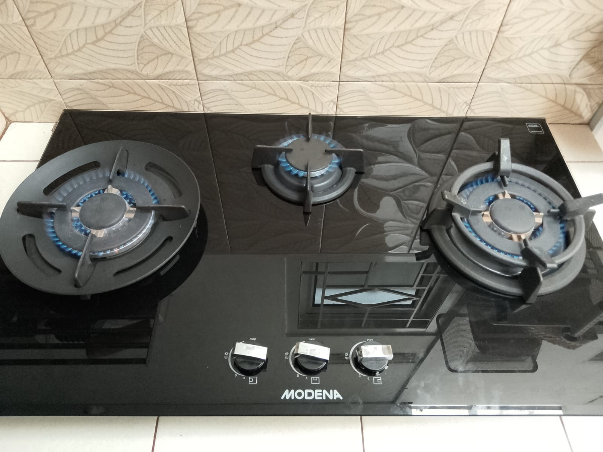
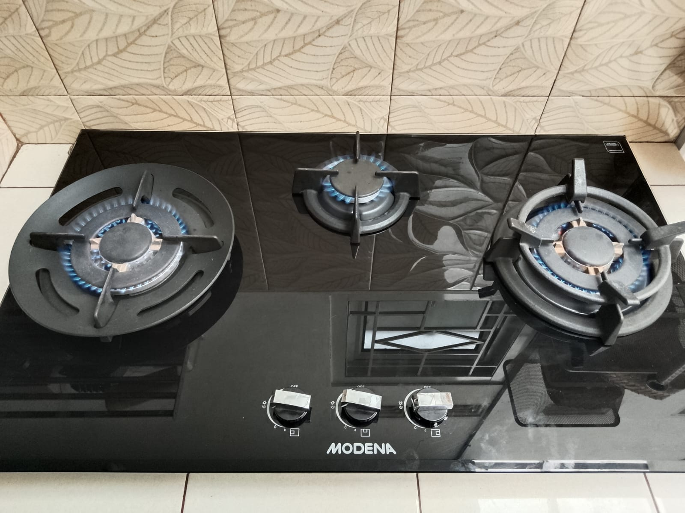
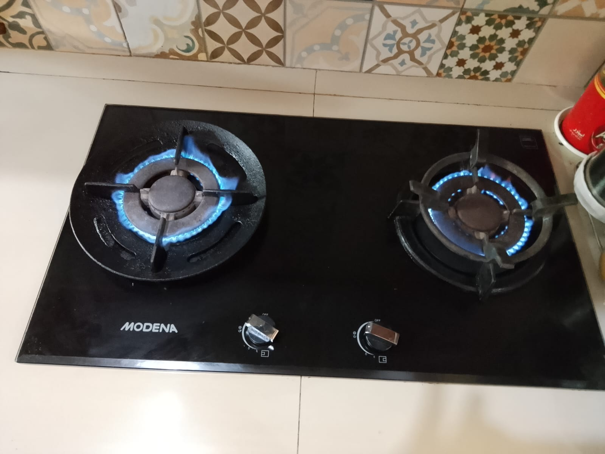
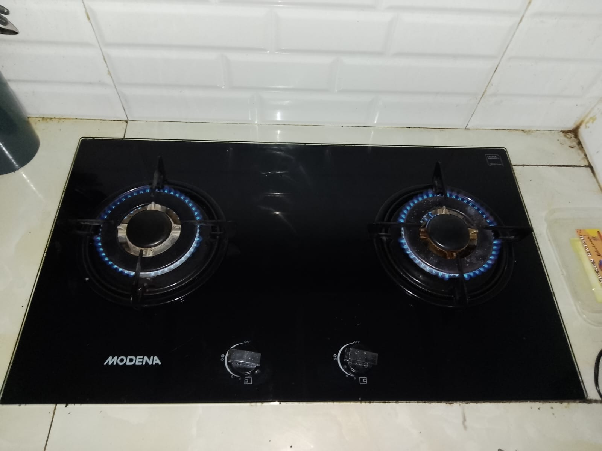
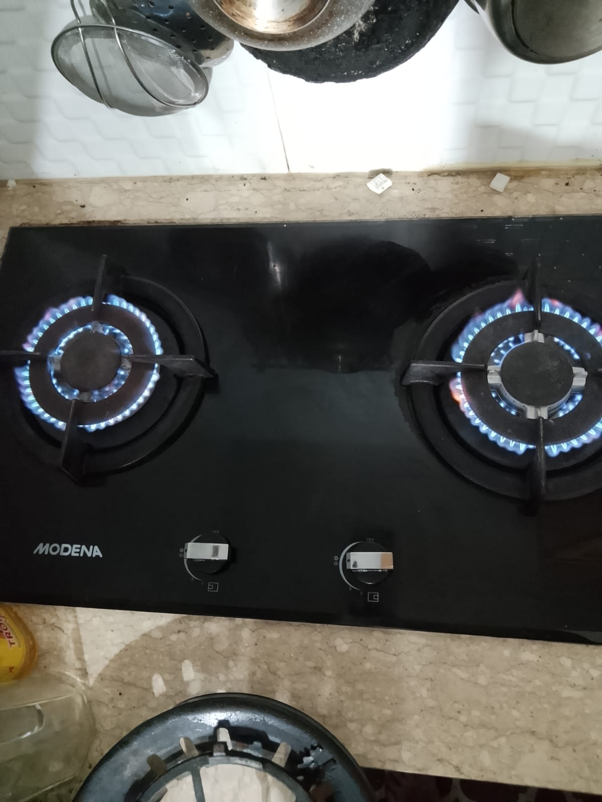
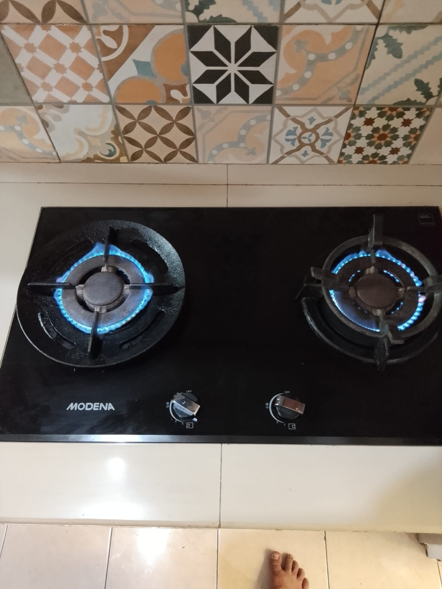

Jasa Service Kompor Modena
Perbaikan kompor Modena cepat, rapi, dan ditangani teknisi berpengalaman.
Kami melayani servis kompor Modena untuk masalah api tidak stabil, pemantik rusak, kebocoran gas, hingga perawatan berkala di rumah maupun tempat usaha.
Teknisi datang cepat ke lokasi
Pengecekan dan perbaikan lebih teliti
500+
Unit berhasil diperbaiki
Same Day
Layanan cepat area terjangkau
24/7
Konsultasi pelanggan



Kenapa pilih kami?
Layanan service kompor Modena yang cepat, aman, dan terpercaya.
Respon Cepat
Admin dan teknisi sigap menindaklanjuti laporan kerusakan Anda.
Prioritas Keamanan
Pengecekan dilakukan untuk meminimalkan risiko kebocoran dan gangguan lain.
Perawatan Berkala
Membantu menjaga performa kompor tetap stabil dan umur pakai lebih panjang.
Konsultasi Mudah
Anda bisa kirim keluhan lebih dulu sebelum teknisi datang ke lokasi.
Layanan Utama
Jenis perbaikan kompor Modena yang kami tangani.
Api Bermasalah
01
Pemeriksaan aliran gas dan pembakaran
Perbaikan Api Kecil atau Tidak Rata
Solusi untuk api kecil, api merah, atau tungku yang tidak menyala sempurna.
- Bersihkan burner dan nozzle
- Cek aliran gas
- Setel pembakaran lebih stabil
Pemantik Rusak
02
Perbaikan igniter dan knop pemicu
Perbaikan Pemantik dan Knop Kompor
Penanganan untuk pemantik tidak bunyi, knop seret, atau tombol tidak berfungsi.
- Cek sistem pemantik
- Perbaiki knop rusak
- Uji fungsi setelah servis
Cek Kebocoran
03
Pemeriksaan keamanan untuk penggunaan harian
Perawatan Berkala dan Cek Keamanan
Service rutin untuk menjaga kompor Modena tetap aman, bersih, dan awet dipakai.
- Cek kebocoran gas
- Bersihkan komponen utama
- Pastikan fungsi normal
Proses Mudah
Dari laporan kerusakan sampai kompor kembali normal.
Laporkan Kerusakan
Sampaikan kendala kompor Modena Anda, mulai dari api kecil, pemantik mati, hingga bau gas.
Jadwalkan Kunjungan
Kami atur waktu kedatangan teknisi sesuai lokasi dan jadwal yang paling nyaman untuk Anda.
Perbaikan dan Uji Fungsi
Teknisi memperbaiki kompor, melakukan pengecekan ulang, lalu memastikan kompor aman digunakan kembali.
Keunggulan Layanan
Lebih tenang dengan service kompor Modena yang tepat.
Respon Cepat
Admin dan teknisi sigap menindaklanjuti laporan kerusakan Anda.
Prioritas Keamanan
Pengecekan dilakukan untuk meminimalkan risiko kebocoran dan gangguan lain.
Perawatan Berkala
Membantu menjaga performa kompor tetap stabil dan umur pakai lebih panjang.
Konsultasi Mudah
Anda bisa kirim keluhan lebih dulu sebelum teknisi datang ke lokasi.
Galeri Service
ini adalah galeri service kompor Modena



Testimoni Pelanggan
Pelanggan merasa terbantu dengan service kami.
"Api kompor Modena saya sempat kecil dan sering mati. Setelah diservis, nyalanya kembali normal dan aman dipakai."
"Teknisinya datang cepat, pengecekannya jelas, dan masalah pemantik kompor langsung beres di tempat."
"Saya suka karena penanganannya rapi dan dijelaskan juga cara merawat kompor Modena agar tidak cepat rusak lagi."
Pertanyaan Umum
Jawaban singkat seputar service kompor Modena.
Kami menangani api kecil, pemantik mati, knop rusak, kebocoran gas, dan perawatan berkala kompor Modena.
Ya, kami melayani kunjungan teknisi ke rumah, apartemen, kos, hingga tempat usaha sesuai area jangkauan.
Bisa, Anda dapat menjelaskan gejala kerusakan terlebih dulu agar kami bantu arahkan penanganan awal.
Video Pengerjaan
Lihat proses service dan pengecekan kompor Modena.
Butuh teknisi kompor Modena?
Segera jadwalkan service sebelum kerusakan menjadi lebih parah.
Hubungi
Siap membantu service kompor Modena Anda.
Layanan Service
Telp: 021-1234-5678
WhatsApp: 0812-3456-7890
Email: Homeservicekompor@gmail.com
Respon cepat di jam kerja
Konsultasi kerusakan gratis
Tersedia jadwal kunjungan teknisi